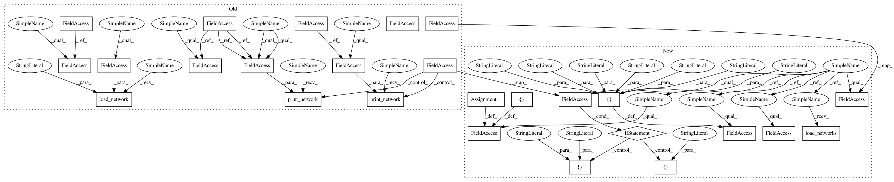

843d68642bd15d5737e3eb39abd76c748d6b52e8,models/cycle_gan_model.py,CycleGANModel,initialize,#CycleGANModel#Any#,14
Before Change
// load/define networks
// The naming conversion is different from those used in the paper
// Code (paper): G_A (G), G_B (F), D_A (D_Y), D_B (D_X)
self.netG_A = networks.define_G(opt.input_nc, opt.output_nc,
opt.ngf, opt.which_model_netG, opt.norm, not opt.no_dropout, opt.init_type, self.gpu_ids)
self.netG_B = networks.define_G(opt.output_nc, opt.input_nc,
opt.ngf, opt.which_model_netG, opt.norm, not opt.no_dropout, opt.init_type, self.gpu_ids)
if self.isTrain:
use_sigmoid = opt.no_lsgan
self.netD_A = networks.define_D(opt.output_nc, opt.ndf,
opt.which_model_netD,
opt.n_layers_D, opt.norm, use_sigmoid, opt.init_type, self.gpu_ids)
self.netD_B = networks.define_D(opt.input_nc, opt.ndf,
opt.which_model_netD,
opt.n_layers_D, opt.norm, use_sigmoid, opt.init_type, self.gpu_ids)
if not self.isTrain or opt.continue_train:
which_epoch = opt.which_epoch
self.load_network(self.netG_A, "G_A", which_epoch)
self.load_network(self.netG_B, "G_B", which_epoch)
if self.isTrain:
self.load_network(self.netD_A, "D_A", which_epoch)
self.load_network(self.netD_B, "D_B", which_epoch)
if self.isTrain:
self.fake_A_pool = ImagePool(opt.pool_size)
self.fake_B_pool = ImagePool(opt.pool_size)
// define loss functions
self.criterionGAN = networks.GANLoss(use_lsgan=not opt.no_lsgan, tensor=self.Tensor)
self.criterionCycle = torch.nn.L1Loss()
self.criterionIdt = torch.nn.L1Loss()
// initialize optimizers
self.optimizer_G = torch.optim.Adam(itertools.chain(self.netG_A.parameters(), self.netG_B.parameters()),
lr=opt.lr, betas=(opt.beta1, 0.999))
self.optimizer_D = torch.optim.Adam(itertools.chain(self.netD_A.parameters(), self.netD_B.parameters()), lr=opt.lr, betas=(opt.beta1, 0.999))
self.optimizers = []
self.schedulers = []
self.optimizers.append(self.optimizer_G)
self.optimizers.append(self.optimizer_D)
for optimizer in self.optimizers:
self.schedulers.append(networks.get_scheduler(optimizer, opt))
print("---------- Networks initialized -------------")
networks.print_network(self.netG_A, opt.verbose)
networks.print_network(self.netG_B, opt.verbose)
if self.isTrain:
networks.print_network(self.netD_A, opt.verbose)
networks.print_network(self.netD_B, opt.verbose)
print("-----------------------------------------------")
def set_input(self, input):
AtoB = self.opt.which_direction == "AtoB"
After Change
def name(self):
return "CycleGANModel"
def initialize(self, opt):
BaseModel.initialize(self, opt)
// specify the training losses you want to print out. The program will call base_model.get_current_errors
self.loss_names = ["D_A", "G_A", "cycle_A", "idt_A", "D_B", "G_B", "cycle_B", "idt_B"]
// specify the images you want to save/display. The program will call base_model.get_current_visuals
visual_names_A = ["real_A", "fake_B", "rec_A"]
visual_names_B = ["real_B", "fake_A", "rec_B"]
if self.isTrain and self.opt.lambda_identity > 0.0:
visual_names_A.append("idt_A")
visual_names_B.append("idt_B")
self.visual_names = visual_names_A + visual_names_B
// specify the models you want to save to the disk. The program will call base_model.save
if self.isTrain:
self.model_names = ["G_A", "G_B", "D_A", "D_B"]
else: // during test time, only load Gs
self.model_names = ["G_A", "G_B"]
// load/define networks
// The naming conversion is different from those used in the paper
// Code (paper): G_A (G), G_B (F), D_A (D_Y), D_B (D_X)
self.netG_A = networks.define_G(opt.input_nc, opt.output_nc,
opt.ngf, opt.which_model_netG, opt.norm, not opt.no_dropout, opt.init_type, self.gpu_ids)
self.netG_B = networks.define_G(opt.output_nc, opt.input_nc,
opt.ngf, opt.which_model_netG, opt.norm, not opt.no_dropout, opt.init_type, self.gpu_ids)
if self.isTrain:
use_sigmoid = opt.no_lsgan
self.netD_A = networks.define_D(opt.output_nc, opt.ndf,
opt.which_model_netD,
opt.n_layers_D, opt.norm, use_sigmoid, opt.init_type, self.gpu_ids)
self.netD_B = networks.define_D(opt.input_nc, opt.ndf,
opt.which_model_netD,
opt.n_layers_D, opt.norm, use_sigmoid, opt.init_type, self.gpu_ids)
if not self.isTrain or opt.continue_train:
self.load_networks(opt.which_epoch)
if self.isTrain:
self.fake_A_pool = ImagePool(opt.pool_size)
self.fake_B_pool = ImagePool(opt.pool_size)
In pattern: SUPERPATTERN
Frequency: 3
Non-data size: 26
Instances
Project Name: junyanz/pytorch-CycleGAN-and-pix2pix
Commit Name: 843d68642bd15d5737e3eb39abd76c748d6b52e8
Time: 2018-04-19
Author: junyanzhu89@gmail.com
File Name: models/cycle_gan_model.py
Class Name: CycleGANModel
Method Name: initialize
Project Name: junyanz/pytorch-CycleGAN-and-pix2pix
Commit Name: 843d68642bd15d5737e3eb39abd76c748d6b52e8
Time: 2018-04-19
Author: junyanzhu89@gmail.com
File Name: models/cycle_gan_model.py
Class Name: CycleGANModel
Method Name: initialize
Project Name: Zhaoyi-Yan/Shift-Net_pytorch
Commit Name: 8f6a6f153781d0908fb0904349aae844494026ea
Time: 2018-12-03
Author: yanzhaoyi@outlook.com
File Name: models/shiftnet_model.py
Class Name: ShiftNetModel
Method Name: initialize